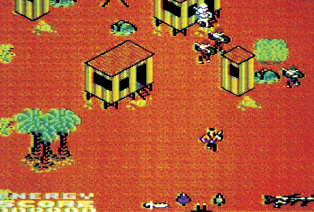
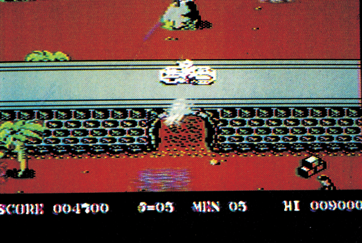

Bildschirmkrieg
Zwei neue Kriegsspiele aus England stürmen die deutschen Bestsellerlisten. »Bei »Rambo« und »Space Invasion« wird geschossen und gemordet, was der Bildschirm hält. Was wir davon halten, lesen Sie hier.
Da kommen aus England zwei neue Spiele, die mit riesigem Aufwand beworben werden. Diese zwei werden auch zu Bestsellern, und gelangen mit Leichtigkeit unter die Top-Ten-Computerspiele im Januar. Alle beide sind mehr oder minder Adaptionen eines der erfolgreichsten Spielautomaten des Jahres 1985. Und beide sind Kriegsspiele…
Es handelt sich um »Rambo« und »Space Invasion«, von denen das letzte eine lizensierte Umsetzung des gleichnamigen Spielautomaten ist. Das Spielprinzip ist recht einfach: Der einsame Super-Soldat muß sich gegen eine Übermacht von bösen Schurken durchsetzen und so viele wie möglich vernichten. Bei »Rambo« wird das Ganze inhaltlich nur dadurch aufgelockert, daß man neben dem Killen der Bösen auch noch die Rettung der Guten übernehmen muß.
»Rambo« hält sich relativ streng an die gleichnamige Film-Vorlage. Diese menschliche Kampfmaschine soll beweisen, daß Vietnamesen immer noch Kriegsgefangenen-Lager unterhalten. Als er selbige findet, mißachtet er seinen Auftrag und unternimmt einen Befreiungsversuch, der natürlich glückt. Daß dabei Hunderte von Gegnern ihr Leben lassen müssen, ist in dem Genre ja selbstverständlich. Im Spiel gibt es fünf verschiedene Phasen: Suche der Gefangenen, Befreiung eines einzelnen, Suche nach einem Helikopter, Befreiung der restlichen Gefangenen und Flucht zur Heimatbasis. Um den Auftrag erfolgreich zu erfüllen, steht Rambo ein ganzes Waffenarsenal zur Verfügung: Maschinengewehr, Pfeil und Bogen, Granate, Hubschrauber, und so weiter. Zwischen diesen Waffen, von denen einige allerdings noch im Gelände aufzusammeln sind, kann er beliebig wechseln. Laute Schüsse rufen nämlich mehr Gegner auf den Plan, so daß sich in der Anfangsphase ein leises Wurfmesser sehr bewährt. Rambo kann sich auf einem sehr großen Spielfeld in alle Richtungen bewegen, das Feld scrollt sehr sauber mit.

Sehr viel gradliniger geht es bei »Space Invasion« zu: Der Spieler soll in ein im Dschungel gelegenes Fort von außerirdischen Gegnern vordringen. Diese sehen dem natürlich nicht tatenlos zu, so daß unser Held, genannt »Super Joe, der Cracksoldat«, reichlich Gebrauch von Maschinengewehr und Handgranate macht. Daß die englischen Programmierer auf den deutschen Markt Rücksicht nehmen wollten, zeigt sich daran, daß das Spiel in England »Commando« heißt, und daß statt Außerirdischer eine irdische Soldaten-Truppe (in verdächtig braunen und grauen Uniformen) das Kampfziel ist. Aber durch Auswechseln von ein paar Sprites macht man aus einem klaren Kriegsspiel kein Unterhaltungs-Programm fürs Kinderzimmer. Denn die »Außerirdischen« sind immer noch recht menschenähnlich und arbeiten nicht mit Laserstrahlen, sondern mit einer »Standard«-Ausrüstung, die vom Granatwerfer bis zum Abfangjäger reicht.

Beide Spiele sind programmiertechnisch kleine Meisterwerke. Das Scrolling und die Animation der Spielfiguren ist sehr gut gelungen. Für die Musik wurden Englands führende Musik-Programmierer engagiert. Martin Galway (Musik sämtlicher Ocean-Programme) schrieb sieben verschiedene Musikstücke für »Rambo« und Rob Hubbard (»Thing on a Spring«) arrangierte eine äußerst packende Version der Spielhallenmusik von »Space Invasion« auf dem C 64.
»Space Invasion« wird demnächst auch in einer abgespeckten Version für den C 16 erscheinen.
Ein drittes Spiel dieser Machart geistert ebenfalls durch die Software-Shops: »Who dares wins II« erzeugte in England eine ganze Menge Wirbel — aber nicht aufgrund seiner Handlung. Produzent Alligata verlor einen Rechtsstreit und mußte einige Änderungen am Programm vornehmen, denn es sah »Space Invasion« zu ähnlich. Im Vergleich mit »Rambo« und »Space Invasion« kann »Who dares wins II« nicht mithalten. Grafik und Sound sind mittelmäßig, der Spielwitz noch geringer.
Wenn man diese Spiele sehr genau betrachtet, dann ist man ziemlich böse, daß so viel Programmierer-Energie für ein derartig »mieses« Thema verschenkt wurde. Dachte man schon, daß die Softwarefirmen endlich vom hirnlosen Ballerspiel losgekommen sind, wird man von diesen Neuerscheinungen eines Besseren belehrt. Und die Kunden scheinen diesem Schritt zurück auch noch recht zu geben.
(bs)| Titel | Rambo |
|---|---|
| Spielidee | 7/15 |
| Grafik | 8/15 |
| Sound | 10/15 |
| Schwierigkeit | 9/15 |
| Motivation | 7/15 |
| Besonderheiten | moralisch bedenklich |
| Hersteller | Ocean |
| Preis | 39 Mark (Kass.) |
| Bezugsquelle | Rushware An der Gümpgesbr. 24, 4044 Kaarst 2 |
| Titel | Space Invasion |
|---|---|
| Spielidee | 5/15 |
| Grafik | 10/15 |
| Sound | 12/15 |
| Schwierigkeit | 10/15 |
| Motivation | 8/15 |
| Besonderheiten | moralisch bedenklich |
| Hersteller | Elite Systems |
| Preis | 39 Mark (Kass.) |
| Bezugsquelle | Rushware An der Gümpgesbr. 24, 4044 Kaarst 2 |